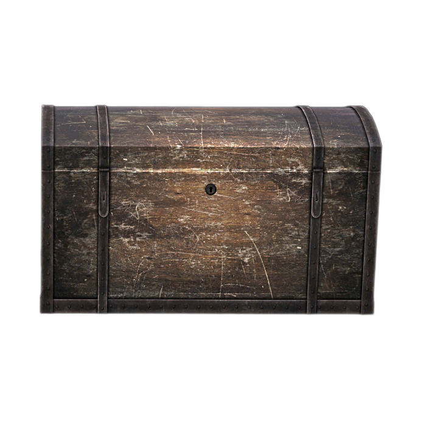

Общая информация
Для расширения личного ящика Вам потребуются золотые монетки🪙, которые Вы можете добыть через голосование на WarGM .
❗ ВАЖНО — ПРАВИЛА ИСПОЛЬЗОВАНИЯ
Каждое добавление страницы будет стоить ровно одну золотую монету.🪙
Используйте одну монету🪙 для улучшения, чтобы не пропали остальные. Если у Вас будет стак монет и Вы нажмете "Улучшить" - пропадут все и выдадут одно улучшение.
Без отката - восстановления монет не будет.
Максимально допустимое количество страниц — 22.
Расширение ящика будет проходить следующим образом:
- Вы держите 1 монету🪙 у себя в инвентаре.
- Нажимаете кнопку "Улучшить", в меню данного сундука.

Личный ящик